《统计学习方法》学习
《统计学习方法》学习之五：决策树
5. 决策树
决策树可以认为是if-then规则的集合，也可以认为是定义在特征空间与类空间上的条件概率分布。其主要优点是模型具有可读性，分类速度快。
决策树学习通常包括3个步骤：特征选择，决策树生成，剪枝。
5.1. 决策树模型与学习
5.1.1. 决策树模型
决策树由结点和有向边组成。结点有两种类型：内部结点和叶结点。内部结点表示一个特征或属性，叶结点表示一个类。
用决策树分类，从根结点开始，对某例的某一特征进行测试，根据测试结果，将实例分配到其子结点；这时，每一个子结点对应着该特征的一个取值。如此递归地对实例进行测试并分配，直至达到叶结点。最后将实例分到叶结点的类中。
5.1.2. 决策树与 if-then 规则
可以将决策树看成一个 if-then 规则的集合。将决策树转换成 if-then 规则的过程是这样的：由决策树的根结点到叶结点的每一条路径构建一条规则；路径上内部结点的特征对应着规则的条件，而叶结点的类对应着规则的结论。决策树的路径或其它相应的 if-then 规则集合具有一个重要的性质：互斥并且完备。这就是说，每一个实例都被一条路径或一条规则所覆盖，而且只被一条路径或一条规则所覆盖。这里所覆盖是指实例的特征与路径上的特征一致或实例满足规则的条件。
5.1.3. 决策树与条件概率分布
决策树还表示给定特征条件下类的条件概率分布。这一条件概率分布定义在特征空间的一个划分上。将特征空间划分为互不相交的单元或区域，并在每个单元定义一个类的概率分布就构成类一个条件概率分布。决策树的一条路径对应于划分的一个单元。决策树所表示的条件概率分布由各个单元给定条件下类的条件概率分布组成。假设 为表示特征的随机变量， 为表示类的随机变量，那么这个条件概率分布可以表示为 。 取值于给定划分下单元的集合， 取值于类的集合。各叶结点（单元）上的条件概率往往偏向某一个类，即属于某一类的概率较大。决策树分类时将该结点的实例强行分到条件概率大的那一类去。
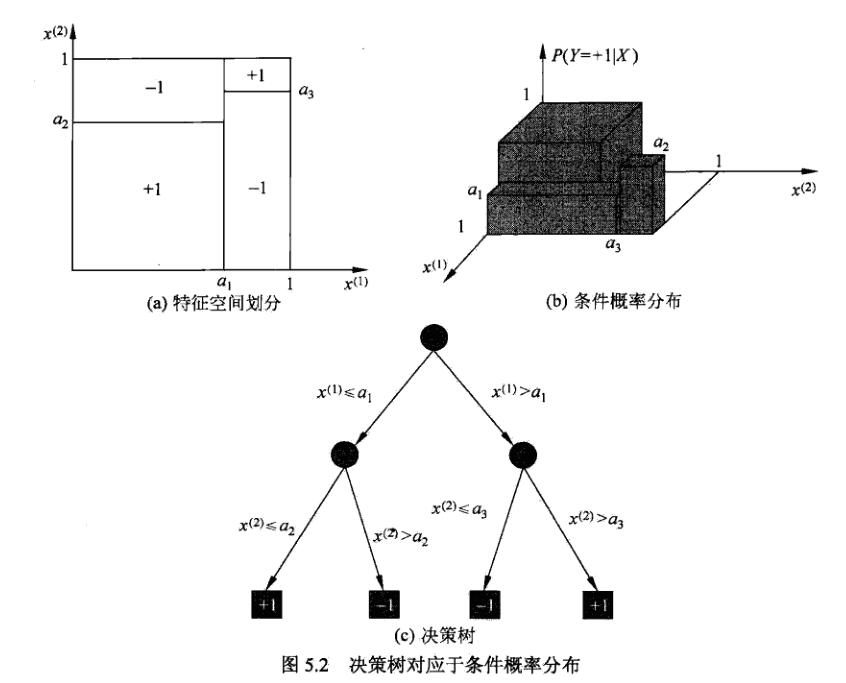
图 5.2(a) 示意地表示了特征空间的一个划分。图中的大正方形表示特征空间。这个大正方形被若干个小矩形分割，每个小矩形表示一个单元。特征空间划分上的单元构成了一个集合， 取值为单元的集合。为简单起见，加沙只有两类：正类和负类，即 取值为 +1 和 -1。小矩形中的数字表示单元的类。图 5.2(b) 示意地表示特征空间划分确定时，特征（单元）给定条件下类的条件概率分布。图 5.2(b) 中条件概率分布对应于图 5.2(a) 的划分。当某个单元 c 的条件概率满足 时，则认为这个单元属于正类，即落在这个单元的实例都被视为正类。图 5.2(c) 为对应图 5.2(b) 中条件概率分布的决策树。
5.1.4. 决策树学习
决策树学习本质上是从训练数据集中归纳出一组分类规则。与训练数据集不相矛盾的决策树（即能对训练数据进行正确分类的决策树）可能有多个，也可能一个也没有。 我们需要的是一个与训练数据矛盾较小的决策树，同时具有很好的泛化能力。从另一个角度看，决策树学习是由训练数据集估计条件概率模型。基于特征空间划分的类的条件概率模型有无穷多个。我们选择的条件概率模型应该不仅对训练数据有很好的拟合，而且对未知数据有很好的预测。
决策树学习用损失函数表示这一目标。如下所述，决策树学习的损失函数通常是正则化的极大似然函数。决策树学习的策略是以损失函数为目标函数的最小化。
当损失函数确定以后，学习问题就变为在损失函数意义下选择最优决策树的问题。因为从所有可能的决策树中选取最优决策树是 NP 完全问题，所以现实中决策树学习算法通常采用启发式方法，近似求解这一最优化问题.这样得到的决策树是次最优(sub-optimal)的。
决策树学习的算法通常是一个递归地选择最优特征，并根据该特征对训练数据进行分割，使得对各个子数据集有一个最好的分类的过程。这一过程对应着对特征空间的划分，也对应着决策树的构建。开始，构建根结点，将所有训练数据都放在根结点。选择一个最优特征，按照这一特征将训练数裾集分割成子集，使得各个子集有一个在当前条件下最好的分类。如果这些子集已经能够被基本正确分类，那么构建叶结点，并将这些子集分到所对应的叶结点中去；如果还有子集不能被基本正确分类，那么就对这些子集选择新的最优特征，继续对其进行分割，构建相应的结点。如此递归地进行下去，直至所有训练数据子集被基本正确分类，或者没有合适的特征为止。最后每个子集都被分到叶结点上，即都有了明确的类。这就生成了一棵决策树。
以上方法生成的决策树可能对训练数据有很好的分类能力，但对未知的測试数据却未必有很好的分类能力，即可能发生过拟合现象。我们需要对已生成的树自下而上进行與枝，将树变得更简单，从而使它具有更好的泛化能力。具体地，就是去掉过于细分的叶结点，使其回退到父结点，甚至更高的结点，然后将父结点或更高的结点改为新的叶结点。
如果特征数量很多，也可以在决策树学习开始的时候，对特征进行选择，只留下对训练数据有足够分类能力的特征。
可以看出，决策树学习算法包含特征选择、决策树的生成与决策树的势枝过程。由于决策树表示一个条件概率分布，所以深浅不同的决策树对应着不同复杂度的概率模型。决策树的生成对应于模型的局部选择，决策树的剪枝对应于模型的全局选择。决策树的生成只考虑局部最优，相对地，决策树的剪枝则考虎全局最优。 决策树学习常用的算法有ID3、C4.5与CART，下面结合这些算法分别叙述决策树学习的特征选择、决策树的生成和剪枝过程。
5.2. 特征选择
5.2.1. 特征选择问题
特征选择在于选取对训练数据具有分类能力的特征。这样可以提高决策树学习的效率。如果利用一个特征进行分类的结果与随机分类的结果没有很大差别，则称这个特征是没有分类能力的。经验上扔掉这样的特征对决策树学习的精度影响不大。通常特征选择的准则是信息增益和信息增益比。
5.2.2. 信息增益
在连续型随机变量中，我们通常用方差来表示数据的波动情况，但是，对于离散型随机变量，有时候其值并不代表大小，比如说抛硬币正面为 1、反面为 0；这里的 1 和 0 并不代表大小，这时候用方差就不太合适，可能就需要用熵来衡量。
熵：
熵表示随机变量不确定性的度量。
设是一个取有限个值的离散随机变量，其概率分布为：
则随机变量的熵：
其中，若，则定义。
条件熵：
设有随机变量，其联合分布：
随机变量给定的条件下随机变量的条件熵：
即，给定条件下的条件概率分布的熵对的数学期望。其中，。
条件熵表示在已知随机变量的条件下随机变量的不确定性。
当熵和条件熵的概率由数据估计（特别是极大似然估计）得到时，所对应的熵与条件熵分别称为经验熵和经验条件熵。
信息增益：
特征对训练集的信息增益：
即，集合的经验熵与特征给定条件下的经验条件熵之差。
信息增益表示已知特征的信息而使得类的信息的不确定性减少的程度。
设训练数据集为，表示其样本容量，即样本个数。
设有个类，为属于类的样本的个数，。
设特征有个不同的特征取值，根据特征的取值将划分为个子集，为的样本数，。
记子集中属于类的样本的集合为，即，为的样本个数。
信息增益算法：
输入：训练数据集和特征
输出：特征对训练数据集的信息增益
- 计算数据集的经验熵
- 计算特征对数据集的经验条件熵
- 计算信息增益
特征对训练集的信息增益比：
即，信息增益与训练数据集关于特征的经验熵之比。
其中，
例子：
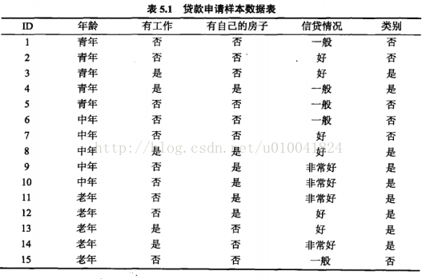
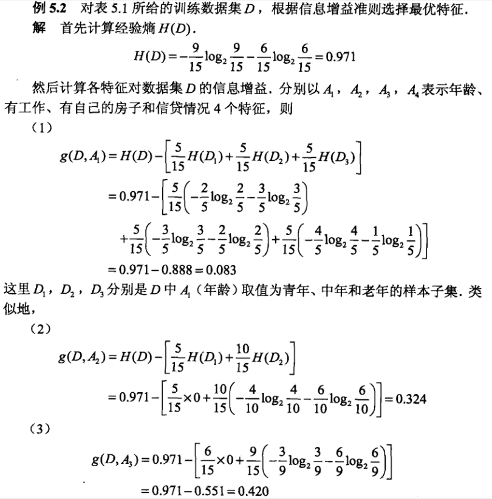
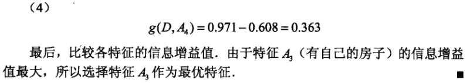
5.2.3. 信息增益比
特征对训练集的信息增益比：
即，信息增益与训练数据集关于特征的经验熵之比。
其中，
n 是特征 A 取值的个数。
现举一个使用信息增益比作为标准的例子：
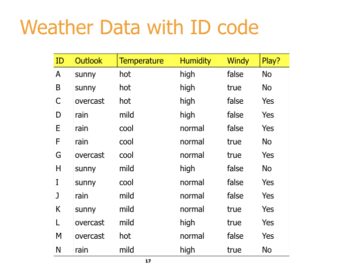
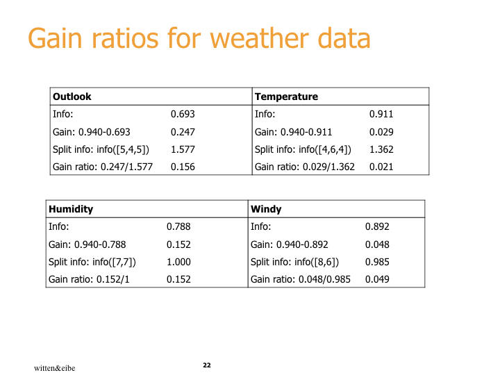
上述中，信息增益比的分母的计算方法具体如下（以上表格中的 OutLook 项为例）：
Split info 中 [5, 4, 5] 分别代表的是有 5 个 sunny、4 个 overcast 和 5 个 rain。所以对应的分母 的计算方法为：
-5/14log(5/14) -4/14log(4/14) -5/14log(5/14) ≈ (-0.36*-1.47) + (-0.29*-1.79) + (-0.36*-1.47) ≈ 0.53 + 0.52 + 0.53 ≈ 1.58
注意：在进行熵计算的时候，上述的 均是以 2 为底的。
5.3. 决策树的生成
5.3.1. ID3 算法
ID3的核心是在各个结点上应用“信息增益”准则选择特征，递归地构建决策树。
具体方法是：从根结点开始，对结点计算所有可能的特征的信息增益，选择增益最大的特征作为结点的特征，由该特征的不同取值建立子结点；再对子结点递归地调用上述方法，构建决策树；直到所有特征的信息增益均很小或没有特征可以选择为止。最后得到一个决策树。ID3 相当于用极大似然法进行概率模型的选择。
ID3算法：
输入：训练数据集，特征，阈值
输出：决策树
-
若中所有实例属于同一类，则为单结点树，并将类作为该结点的类标记，返回；
-
若，则为单结点树，并将中实例数最大的类作为该结点的类标记，返回；
-
否则，计算中各特征的信息增益，选择信息增益最大的特征
-
如果的信息增益小于阈值，则置为单结点树，并将中实例数量最大的类作为该结点的类标记，返回;
-
否则，对的每一个可能值，依将分割为若干非空子集，将中实例数对大的类作为标记，构建子结点，由结点及其子结点构成树，返回；
-
对第个子结点，以为训练集，以为特征集，递归地调用步1.～步5.，得到子树，返回。
下面举一个例子：
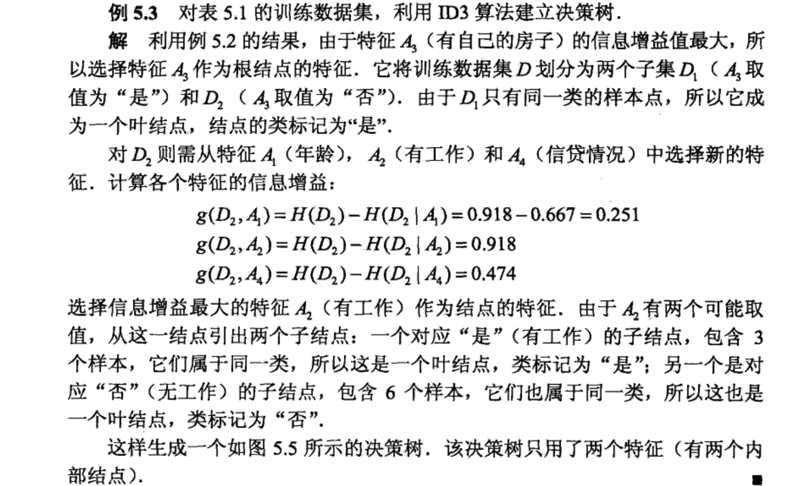
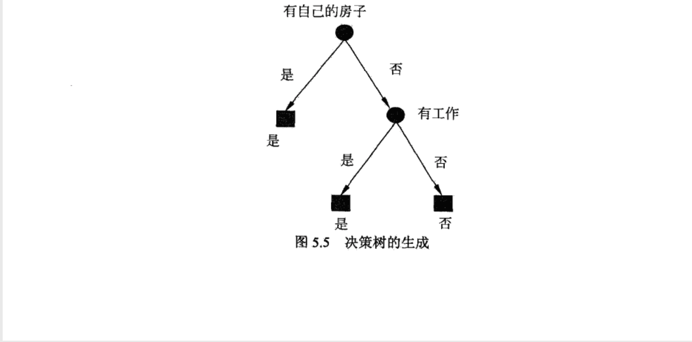
ID3 算法只有树的生成，所以该算法生成的树容易产生过拟合。
5.3.2. C4.5 的生成算法
对ID3算法进行了改进，生成过程中用信息增益比来选择特征。
C4.5算法：
输入：训练数据集，特征，阈值
输出：决策树
-
若中所有实例属于同一类，则为单结点树，并将类作为该结点的类标记，返回；
-
若，则为单结点树，并将中实例数最大的类作为该结点的类标记，返回；
-
否则，计算中各特征的信息增益，选择信息增益比最大的特征
-
如果的信息增益小于阈值，则置为单结点树，并将中实例数量最大的类作为该结点的类标记，返回;
-
否则，对的每一个可能值，依将分割为若干非空子集，将中实例数对大的类作为标记，构建子结点，由结点及其子结点构成树，返回；
-
对第个子结点，以为训练集，以为特征集，递归地调用步1.～步5.，得到子树，返回。
5.4. 决策树的剪枝
剪枝：学习时过多地考虑如何提高对训练数据的正确分类，从而构建出过于复杂的决策树（过拟合）。解决办法是考虑决策树的复杂度，对已生成的树进行简化，这一过程称为剪枝（pruning）。
具体地，从树上裁掉一些子树或叶结点，并将其根结点或父结点作为新的叶结点，从而简化分类树模型。
决策树的剪枝通过极小化决策树整体的损失函数或代价函数来实现。
设树的叶结点个数为，是树的叶结点，该叶结点有个样本点，其中类的样本点有个，，为叶结点上的经验熵，则决策树的损失函数：
其中，为参数，经验熵：
损失函数中，记：
则：
其中，表示模型对训练数据的预测误差，即模型与训练数据的拟合程度，表示模型复杂度，参数控制两者之间的影响。较大的 促使选择较简单的模型（树），较小的 促使选择较复杂的模型（树）。 意味着只考虑模型与训练数据的拟合程度，不考虑模型的复杂度。
剪枝，就是当 确定时，选择损失函数最小的模型。
“决策树生成”只考虑了通过提高信息增益（或信息增益比）对训练数据进行更好的拟合。而“决策树剪枝”通过优化损失函数，还考虑了减小模型复杂度。“决策树生成”学习局部的模型，而“决策树剪枝”学习整体的模型。
式(1)或式(2)定义的损失函数的极小化等价于正则化的极大似然估计。所以，利用损失函数最小原则进行剪枝就是用正则化的极大似然估计进行模型选择。
树的剪枝算法：
输入：决策树，参数
输出：修剪后的子树
-
计算每个结点的经验熵
-
递归地从树的叶结点向上回缩
设一组叶结点回缩到其父结点之前与之后的整体树分别为与，其对应的损失函数值分别是与，如果：
则进行剪枝，即将父结点变为新的叶结点。
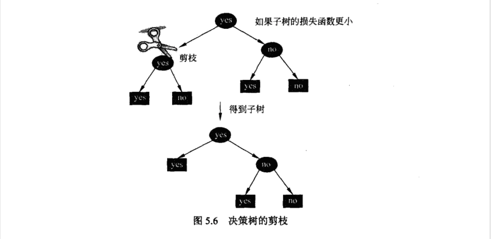
- 返回2.，直到不能继续为止，得到损失函数最小的子树
5.5. CART 算法
第一部分：
在阅读下面内容前，建议先阅读目录【reference】-- 目录【决策树（CART）python 实现】的内容。
需要注意的是：上述【决策树（CART）python 实现】中的代码并没有实现决策树的剪枝；其后的交叉验证只是验证了下所得决策树的准确率，并没有进行剪枝。
在进行后面的相关内容（书籍原内容）学习之前，建议先阅读以下内容。
在阅读以下内容的时候，重点是看那两个具体的例子；特别是回归树的例子。原因是 第一部分 的代码实现中实现的仅是分类树（利用基尼系数进行决策分类），未实现回归树。
可以看一下两者区别。其实主要就是在“决策”的时候采用的标准是不一样的，主要的思路甚至大部分思想都是完全一样的。（通过比较两种树的区别，也可以看出。）
与 第一部分 一样，该内容似乎也未实现决策树的剪枝。
具体的代码实现可粗略看一下即可。
ADD5_1 机器学习系列之手把手教你实现一个分类回归树
ADD5_1-1. CART 树简介
ID3 和 C4.5 决策树利用的是信息增益和信息增益比来划分数据集。但是这两种决策树是有缺陷的，即按某特征划分后，该特征将不会在后面的划分中出现。 这就导致了划分过于迅速，从而影响分类结果。在这篇文章中将要介绍的 CART（Classification And Regression Tree）树，即分类回归树利用二分策略，有效地避免了划分过于迅速这一问题。而且二分策略可以直接处理连续型属性值。
CART 树（分类回归树）分为分类树和回归树。顾名思义，分类树用于处理分类问题；回归树用来处理回归问题。我们知道分类和回归是机器学习领域两个重要的方向。分类问题输出特征向量对应的分类结果，回归问题输出特征向量对应的预测值。
分类树和 ID3、C4.5 决策树相似，都用来处理分类问题。不同之处是划分方法。分类树利用基尼指数进行二分。如图 1 所示就是一个分类树。

图 1. 分类树示例
回归树用来处理回归问题。回归将已知数据进行拟合，对于目标变量未知的数据可以预测目标变量的值。如图 2 所示就是一个回归树，其中 s 是切分点，x 是特征，y 是目标变量。可以看出图 2 利用切分点 s 将特征空间进行划分，y 是在划分单元上的输出值。回归树的关键是如何选择切分点、如何利用切分点划分数据集、如何预测 y 的取值。
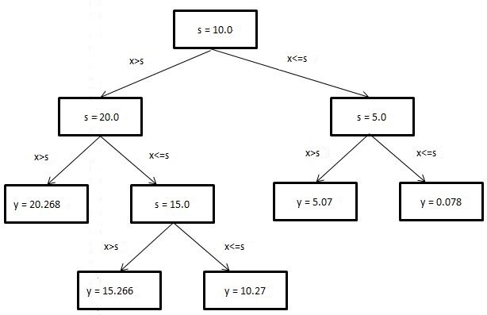
图2. 回归树示例
ADD5_1-2. CART 树原理
ADD5_1-2.1. 分类树
二分：
分类树利用二分划分数据。将特征值等于切分点值的数据划分为左子树，将特征值不等于切分点值的数据划分为右子树。
基尼指数：同信息增益、信息增益比作用类似，不过基尼指数相对更快
假设有 N 个类，样本属于第 n 类的概率为 Pn,则基尼指数为：
若数据集按特征 A 取值是否等于切分点值划分为 D1 和 D2 两部分，则在特征 A 下，集合 D 的基尼指数为：
ADD5_1-2.2. 回归树
二分
回归树也利用二分划分数据。与分类树不同的是，回归树将特征值大于切分点值的数据划分为左子树，将特征值小于等于切分点值的数据划分为右子树。
平方误差
不同于分类树，回归树用平方误差选择切分点。若数据集按特征取值是否大于切分点值划分为两部分，则在特征 A 下，集合 D 的平方误差为：
ADD5_1-3. 用 CART 树进行分类和回归
本节主要用示例数据详细说明如何用 CART 树进行分类和回归。
ADD5_1-3.1. 分类树
| 圆的 | 红的 | 分类 |
|---|---|---|
| 1 | 1 | 1 |
| 1 | 0 | 0 |
| 0 | 1 | 0 |
| 0 | 0 | 0 |
| 1 | 0 | 0 |
表1. 示例数据集
选择最优特征
- 按特征"圆的" = 1 划分数据集，则 Gini 为：
- 按特征"红的" = 1 划分数据集，则 Gini 为：
2/5 * Gini(D1) + 3/5 * Gini(D0)
= 2/5 * [1/2 * 1/2 + 1/2 * 1/2] + 3/5 * [0]
= 0.2
综上所述，由于按特征"红的"比特征"圆的"划分的基尼指数小，所以特征"红的" = 1 为切分点。
按最优特征划分数据集
按特征"红的"划分数据集后，有两种情况，第一种为如果是红的:0,则分类:0; 第二种为如果是红的:1, 则有如下数据子集 {圆的:1,分类：1; 圆的:0, 分类:0}
接下来需要对数据子集 {圆的:1,分类：1; 圆的:0, 分类:0} 继续划分。由于剩下一个特征，故按特征"圆的"划分数据集。划分后，如果是圆的:1，则分类:1；如果是圆的:0, 则分类:0。
返回的决策树为：
{'红的': {0: '类别 0', 1: {'圆的': {0: '类别 0', 1: '类别 1'}}}}
ADD5_1-3.2. 回归树
| 面积/平米 | 价格/万 |
|---|---|
| 20 | 40.1 |
| 21 | 40.3 |
| 35 | 70.4 |
| 36 | 70.2 |
表2. 示例数据集
选择最优特征
1.按特征"面积" = 20 划分数据集，
y1 均值为 40.1，
y2 均值为 (40.3 + 70.4 + 70.2) / 3 = 60.3,
则平方误差为：
0 + (40.3 – 60.3)2 + (70.4 – 60.3)2 +(70.2 – 60.3)2
= 600.02
- 按特征"面积" = 21 划分数据集，则平方误差为：
y1 均值为 (40.1 + 40.3)/ 2 = 40.2，
y2 均值为 (70.4 + 70.2) / 2 = 70.3,
则平方误差为：
(40.1 –40.2)2 + (40.3 –40.2)2 + (70.4 –70.3)2 +(70.2 –70.3)2
= 0.04
- 按特征"面积" = 35 划分数据集，则平方误差为：
y1 均值为 (40.1 + 40.3 + 70.4) / 3 = 50.27，
y2 均值为 70.2,
则平方误差为：
(40.1 –50.27)2 + (40.3 –50.27)2 +(70.4 –50.27)2 + 0
= 608.05
综上所述，由于按特征"面积" = 21 比特征"面积" = 20、"面积" = 35 划分的平方误差小，所以特征"面积" = 21 为切分点。
按最优特征划分数据集
以特征"面积" = 21 为切分点，将数据切分为 {面积 = 20,价格 = 40.1; 面积 = 21, 价格 = 40.3}， {面积 = 35,价格 = 70.4; 面积 = 36, 价格 = 70.2}两个子集。
其中子集{面积 = 20,价格 = 40.1; 面积 = 21, 价格 = 40.3}的目标变量非常接近，故不继续划分，得叶节点值(40.1 + 40.3) / 2 = 40.2； 同理得子集{面积 = 35,价格 = 70.4; 面积 = 36, 价格 = 70.2}的叶节点值为 (70.4 + 70.2) / 2 = 70.3。
ADD5_1-4. 实现步骤: 自己动手实现 CART 树
本节将介绍分类树和回归树的代码实现细节。两者都是二分类划分数据。分类树利用基尼指数选择最优特征和最优特征对应的划分属性值。回归树利用平方误差选择最优特征和最优特征对应的划分属性值。
ADD5_1-4.1. 分类树
读者应该还记得上篇介绍的 ID3 和 C4.5 决策树，它们利用信息增益和信息增益比划分数据，且创建出来的树可以有任意多的分支数，分支数取决于特征值的多少。本节介绍的分类树与前两种决策树不同之处在于，它是二分类，即创建出来的树最多只有两个分支，而且是利用基尼指数划分数据。分类回归树分为两种树，分类树和回归树。本节先介绍分类树，回归树会在下一小节继续介绍。
清单 1. 计算基尼指数
def calcGini(dataSet): totalNum = shape(dataSet)[0] labelNum = {} gini = 0 for data in dataSet: label = data[-1] if label in labelNum: labelNum[label] += 1 else: labelNum[label] = 1 for key in labelNum: p = labelNum[key] / totalNum gini += p * (1 - p) return gini
清单 1 介绍了基尼指数的实现代码。基尼指数的计算过程详见本文第二节内容。
清单 2. 选择最优特征
def chooseBestFeatVal2Split(dataSet): #如果没有可划分的特征或所有目标变量相等，停止 if(len(dataSet[0]) == 1): return None, None if(len(set([d[-1] for d in dataSet])) == 1): return None, None bestFeature = 0 bestValue = 0 lowestGini = 100000 totalGini = calcGini(dataSet) totalNum = shape(dataSet)[0] for feature in range(shape(dataSet)[1] - 1): allValues = [d[feature] for d in dataSet] values = set(allValues) for value in values: leftChild, rightChild = splitByFeatVal(feature, value, dataSet) if(shape(leftChild)[0] == 0 or shape(rightChild)[0] == 0): continue leftNum = shape(leftChild)[0] rightNum = shape(rightChild)[0] curGini = leftNum / totalNum * calcGini(leftChild) + \ rightNum / totalNum * calcGini(rightChild) if(curGini < lowestGini): bestFeature = feature bestValue = value lowestGini = curGini #如果 gini 减少很小，停止 if(totalGini - lowestGini < 0.00001): return None, None return bestFeature, bestValue
清单 2 介绍了分类树选择最优特征的过程。对所有特征及特征下的所有属性值，计算按其划分的子数据集的基尼指数，选择最小的基尼指数对应的特征和属性值为最优特征及最优特征对应的最优属性。注意分类树的结束条件。如果没有可以划分的特征或者所有目标变量都相等，则停止继续划分数据集；如果基尼指数减小很少，也停止继续划分数据集。
清单 3. 按特征划分数据集
def splitByFeatVal(feature, value, dataSet): #左子树的值大于根节点的值 dataSet = mat(dataSet) leftChild = dataSet[nonzero(dataSet[:,feature] == value)[0], :].tolist() #右子树的值小于等于根节点的值 rightChild = dataSet[nonzero(dataSet[:,feature] != value)[0], :].tolist() return leftChild, rightChild
清单 3 用来给分类树划分数据集。如果 feature 对应的属性值等于 value 值，则将该条数据划分到左子树；如果 feature 对应的属性值不等于 value 值，则将该条数据划分到右子树。
清单 4. 结束条件
def checkIsOneCateg(newDataSet): flag = False categoryList = [data[-1] for data in newDataSet] category = set(categoryList) if(len(category) == 1): flag = True return flag def majorityCateg(newDataSet): categCount = {} categList = [data[-1] for data in newDataSet] for c in categList: if c not in categCount: categCount[c] = 1 else: categCount[c] += 1 sortedCateg = sorted(categCount.items(), key = lambda x:x[1], reverse = True) return sortedCateg[0][0]
清单 4 介绍了分类树用来结束的条件。checkIsOneCateg 函数用来判断数据集的目标变量是否为一个分类结果。majorityCateg 函数用来选出目标变量中的大多数值作为输出变量。
清单 5. 创建分类树
def createClassifTree(dataSet): feature, value = chooseBestFeatVal2Split(dataSet) #如果无法分割，那么返回叶节点的值。如果业界点钟所有目标变量相同则为此值，不同则为多数值 if feature == None and checkIsOneCateg(dataSet): return dataSet[0][-1] if feature == None and not checkIsOneCateg(dataSet): return majorityCateg(dataSet) #如果可以继续分割，那么继续创建新的子树 classifTree = {} classifTree['featIndex'] = feature classifTree['value'] = value leftChild, rightChild = splitByFeatVal(feature, value, dataSet) classifTree['leftChild'] = createClassifTree(leftChild) classifTree['rightChild'] = createClassifTree(rightChild) return classifTree
清单 5 用来创建分类树。首先判断是否可以继续分割。如果无法分割，则出现叶节点。若所有目标变量值相同，则叶节点值就是此目标变量的值；否则，选出大多数值作为叶节点的值。如果可以继续分割，则创建子树 classifTree。这是一个 python 中的字典结构，存储四个键值对。featIndex 存储特征的下标，value1 存储特征的值；leftChild 存储左子树；rightChild 存储右子树。对左右子树继续递归调用 createClassifTree 函数，直到达到结束条件为止。
ADD5_1-4.2. 回归树
回归树与分类树的不同之处体现在选择最优特征的方法、划分数据集的方法、叶节点取值的方法上。
清单 6. 计算平方误差
def calcErr(dataSetMat): error = var(dataSetMat[:,-1]) * shape(dataSetMat)[0] return error
清单 6 介绍了平方误差的计算方法。具体方法详见本文第二节内容。
清单 7. 选择最优特征
def chooseBestFeatVal2Split(dataSetMat): #如果所有目标变量相等，停止 if(len(set(dataSetMat[:,-1].T.tolist()[0])) == 1): return None, None bestFeature = 0 bestValue = 0 lowestErr = 100000 totalErr = calcErr(dataSetMat) for feature in range(shape(dataSetMat)[1] - 1): allValues = [d[feature] for d in dataSetMat.tolist()] values = set(allValues) for value in values: leftChild, rightChild = splitByFeatVal(feature, value, dataSetMat) if(shape(leftChild)[0] == 0 or shape(rightChild)[0] == 0): continue curErr = calcErr(leftChild) + calcErr(rightChild) if(curErr < lowestErr): bestFeature = feature bestValue = value lowestErr = curErr #如果误差减少很小，停止 if(totalErr - lowestErr < 1): return None, None return bestFeature, bestValue
清单 7 用来为回归树选择最优特征。对每个特征的每个属性值，计算按该属性值二分后的两个子数据集的平方误差和，选择平方误差和最小的特征作为最优特征。除了用平方误差代替基尼指数之外，其他过程和分类树基本相同。
清单 8. 按特征划分数据集
def splitByFeatVal(feature, value, dataSetMat): #左子树的值大于根节点的值 leftChild = dataSetMat[nonzero(dataSetMat[:,feature] > value)[0], :] #右子树的值小于等于根节点的值 rightChild = dataSetMat[nonzero(dataSetMat[:,feature] <= value)[0], :] return leftChild, rightChild
清单 8 介绍了回归树划分数据集的方法。与分类树不同的是，回归树将 feature 属性值大于 value 的数据归入 leftChild 左子树，将 feature 属性值小于等于 value 的数据归入 rightChild 右子树。
清单 9. 创建回归树
def createRegTree(dataSetMat): feature, value = chooseBestFeatVal2Split(dataSetMat) #如果无法分割，那么返回叶节点的值，即所有 dataSetMat 的均值 if feature == None: return mean(dataSetMat[:,-1]) #如果可以继续分割，那么继续创建新的子树 regTree = {} regTree['featIndex'] = feature regTree['value'] = value leftChild, rightChild = splitByFeatVal(feature, value, dataSetMat) regTree['leftChild'] = createRegTree(leftChild) regTree['rightChild'] = createRegTree(rightChild) return regTree
清单 9 是创建回归树的代码。与分类树不同之处在于，如果无法继续划分数据集，那么返回子数据集的所有目标变量的均值作为叶节点的值。其他部分和分类树基本相同。
ADD5_1-5. 本文数据集简介
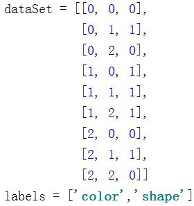
图 3. 分类树数据集样例
数据集有 9 条数据。其中第一列数据代表颜色，取值范围是 0,1,2。其中 0 代表青色，1 代表红色，2 代表黄色。第二列数据代表形状，取值范围是 0,1,2。其中 0 代表扁的，1 代表圆的，2 代表椭圆的。第三列代表分类，取值范围是 0,1。其中 0 代表不是苹果，1 代表是苹果。
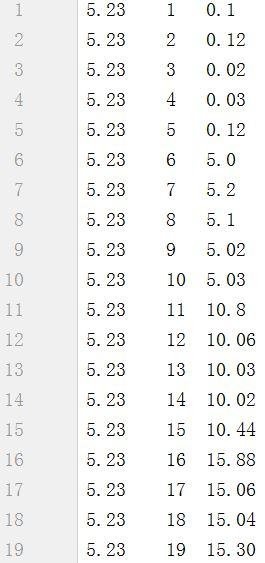
图 4. 回归树数据集样例
数据集共 25 条数据。第一列数据代表房子的评价得分，此数据集中所有数据的评价得分都是 5.23。第二列数据代表房子的平方数，第三列数据代表房子的价格，以万为单位。
ADD5_1-6. 应用示例: 应用实现的 CART 树解决实际问题
清单 10. 用分类树解决实际问题
if __name__ == '__main__': dataSet, labels = loadDataSet() classifTree = createClassifTree(dataSet) print(classifTree)
清单 10 列出调用分类树进行建模的代码。
运行结果：
{'value': 1, 'featIndex': 0, 'leftChild': 1, 'rightChild': {'value': 1, 'featIndex': 1, 'leftChild': 1, 'rightChild': 0}}
运行结果中的树用 python 中的字典结构表示。featIndex 表示 feature 的下标，其中 feature 指颜色和形状。value 指 feature 的取值，取值范围是 0, 1, 2。leftChid 表示左子树，左子树是等于父节点值的子集合数据。rightChild 表示右子树，右子树是不等于父节点值的子集合数据。如果左子树和右子树是叶节点，则叶节点的值就是最终的分类结果。其中叶节点的取值范围是 0 和 1。0 代表是苹果，1 代表不是苹果。运行结果含义为：如果颜色是红的，则是苹果；如果颜色不是红的，但形状是圆的，则是苹果；如果颜色不是红的，且形状不是圆的，则不是苹果。该运行结果与图 1 所示分类树相同。
清单 11. 用回归树解决实际问题
if __name__ == '__main__': dataSetMat = loadDataSet() regTree = createRegTree(dataSetMat) print(regTree)
清单 11 列出了调用回归树进行建模的代码。
运行结果：
{'featIndex': 1, 'value': 10.0, 'rightChild': {'featIndex': 1, 'value': 5.0, 'rightChild': 0.078, 'leftChild': 5.0700000000000003}, 'leftChild': {'featIndex': 1, 'value': 20.0, 'rightChild': {'featIndex': 1, 'value': 15.0, 'rightChild': 10.27, 'leftChild': 15.266}, 'leftChild': 20.268000000000001}}
运行结果中的树同样用 python 中的字典结构表示。featIndex 和 value 的含义和分类树中的相同。在回归树中，leftChild 代表的左子树的值比父节点值大，rightChild 代表的右节点的值小于等于父节点值。运行结果含义是：第一个特征的值小于 5.0 时，目标变量为 0.078；第一个特征的值大于 5.0 且小于 10.0 时，目标变量为 5.07；第一个特征的值大于 15.0 且小于 20.0 时，目标变量为 15.266；第一个特征的值大于 10.0 且小于 15.0 时，目标变量为 10.27；第一个特征的值大于 20.0 时，目标变量为 20.268。该运行结果与图 2 所示回归树相同。
ADD5_1-7. 总结
本文首先介绍了分类回归树及预剪枝、后剪枝的概念，接着从二分、基尼指数、平方误差等入手详细深入地讲解了 CART 树的原理。接着用例子介绍分类树与回归树的算法过程。然后通过代码样例，介绍了自己动手实现分类树与回归树的思路。最后，利用数据展示了如何应用 CART 树解决实际问题。通过上面介绍，读者已经知道回归树用来进行分段回归，每段输出的目标变量为该段所有目标变量的均值。这种方法简单易实现，但是也有局限。如果每段的目标变量并非一个常数，而是一个线性模型，用回归树拟合就会造成误差过大的后果。这时，就需要考虑模型树。同回归树一样，模型树也是对特征空间进行划分，但在每个划分内部建立线性模型，而非一个常数。关于模型树的详细介绍请参考下方所列文献。由于分类回归树对特征空间不断划分，这很容易造成过拟合的问题。处理过拟合不仅需要预剪枝，还需要后剪枝。预剪枝是在建立模型阶段通过制定终止条件来提早完成划分。后剪枝则是在模型建立后，利用测试数据计算剪除部分叶节点是否会造成模型误差减少，如果是，则剪除对应的叶节点。当然，后剪枝时不仅要考虑误差是否减少，还需考虑正则项，即模型的大小。最后综合选择模型误差较小且模型简单的分类回归树。由于篇幅有限，对后剪枝感兴趣的读者请参考下文所列文献。
ADD5_1-8. 参考资源
本文用到的参考文献如下：
- 参考李航著《统计学习方法》，了解后剪枝概念。
- 参考 Peter Harrington 著《机器学习实战》，了解 CART 树代码框架及模型树概念。
下载资源
第三部分：
CART：cart（classification and regression tree），分类与回归树，是应用广泛的决策树学习方法，既可用于分类，也可用于回归。
CART 是在给定输入随机变量 X 条件下输出随机变量 Y 的条件概率分布的学习方法。CART假设决策树是二叉树，内部结点特征的取值为“是”和“否”，左分支是取值为“是”的分支，右分支是取值为“否”的分支。这样的决策树等价于递归地二分每个特征，将输入空间即特征空间划分为有限个单元，并在这些单元上确定预测的概率分布。CART算法分为两步：
（1）决策树生成：基于训练数据集生成决策树，生成的决策树要尽量大。
（2）决策树剪枝：用验证数据集对已生成的树进行剪枝并选择最优子树，这时用损失函数最小作为剪枝的标准。
5.5.1. CART 生成
递归地构建二叉决策树的过程。对回归树用平方误差最小化准则，对分类树用基尼指数最小化准则，进行特征选择，生成二叉树。
1. 回归树的生成
假设与分别为输入和输出变量，并且是连续变量，给定训练数据集：
可选择第个变量及其取值作为切分变量和切分点，并定义两个区域：
最优切分变量及最优切分点：
其中，是区域上的回归决策树输出，是区域上所有输入实例对应的输出的均值：
对每个区域和重复上述过程，将输入空间划分为个区域，在每个区域上的输出为，最小二乘回归树：
最小二乘回归树生成算法：
输入：训练数据集
输出：回归树
- 选择最优切分变量与切分点：
- 用最优切分变量与切分点划分区域并决定相应的输出值：
-
继续对两个子区域调用步骤1.和2.，直到满足停止条件；
-
将输入空间划分为个区域，生成决策树：
2. 分类树的生成
分类问题中，假设有个类，样本点属于第类的概率为，则概率分布的基尼指数：
对于二分类问题，若样本点属于第1类的概率为，则概率分布的基尼指数：
对于给定样本集和，其基尼指数：
其中，是中属于第类的样本自己，是类别个数。
如果样本集合根据特征是否取某一可能值被分割成和两个部分，即
则在特征的条件下，集合的基尼指数
基尼指数表示集合的不确定性，基尼指数表示经分割后集合的不确定性。基尼指数值越大，样本集合的不确定性也越大。
下图显示了二分类问题中，Gini，半熵和分类误差率的关系，可以看到Gini和半熵很接近，都可近似表示分类误差率。
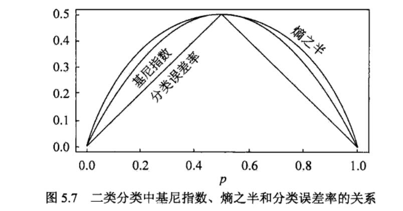
CART生成算法：
输入：训练数据集，特征，阈值
输出：CART决策树
-
设结点的训练数据集为，对每一个特征，对其可能取的每个值，根据样本点对的测试为“是”或“否”将分割成和两部分，并计算。
-
在所有可能的特征以及其所有可能的切分点中，选择基尼指数最小的特征及其对应的切分点作为最优特征与最优切分点。依此从现结点生成两个子结点，将训练数据集依特征分配到两个子结点中去。
-
对两个子结点递归地调用1.和2.，直至满足停止条件。
-
生成CART决策树。
算法停止条件：结点中的样本个数小于预定阈值，或，样本集的基尼指数小于预定阈值（样本基本属于同一类），或没有更多特征。
5.5.2. CART 剪枝
CART 剪枝算法从“完全生长”的决策树的底端剪去一些子树，使决策树变小（模型变简单），从而能够对未知数据有更准确的预测。CART 剪枝算法由两步组成：
（1）首先从生成算法产生的决策树𝑇0底端开始不断剪枝，直到𝑇0的根结点，形成一个子树序列{𝑇0,𝑇1,...,𝑇𝑛}。
（2）通过交叉验证法在独立的验证数据集上对子树序列进行测试，从中选择最优子树。
- 剪枝，形成一个子树序列
对整体树任意内部结点，以为单结点树的损失函数：
以为根结点的子树的损失函数：
当及充分小时，有不等式：
当增大时，在某一有：
即与有相同的损失函数值，而的结点少，因此对进行剪枝。
- 利用独立的验证数据集，测试子树序列𝑇0,𝑇1,...,𝑇𝑛中各棵子树的平方误差或基尼指数。平方误差或基尼指数最小的决策树被认为是最优的决策树。子树序列𝑇1,𝑇2,...,𝑇𝑛都对应于一个参数𝛼1,𝛼2,...,𝛼𝑛。所以，当最优子树𝑇𝑘确定时，对应的𝛼𝑘也确定了，即得到最优决策树𝑇𝛼。
CART剪枝算法：
输入：CART决策树
输出：最优决策树
-
设
-
设
-
自下而上地对各内部结点计算，以及
其中，表示以为根结点的子树，是对训练数据的预测误差，是的叶结点个数。
-
自下而上地访问内部结点，如果有，则进行剪枝，并对叶结点以多数表决法决定其类别，得到树
-
设
-
如果不是由根结点单独构成的树，则回到步骤4.
-
采用交叉验证法在子树序列中选取最优子树